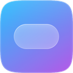
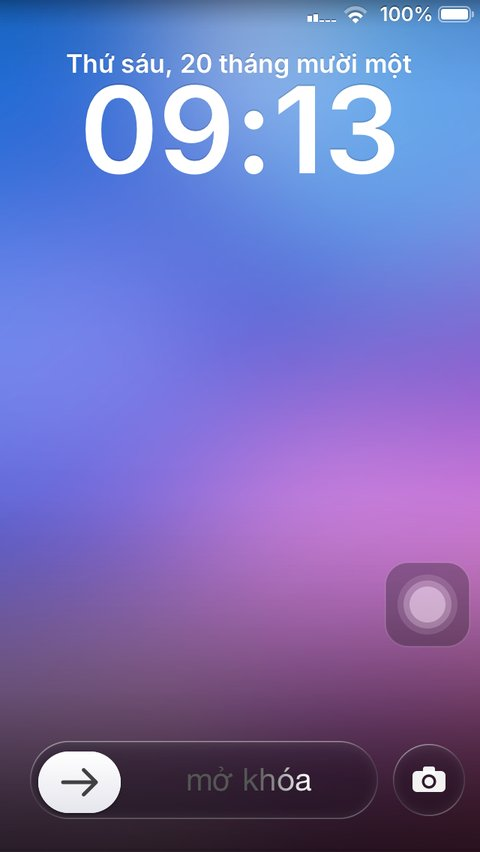
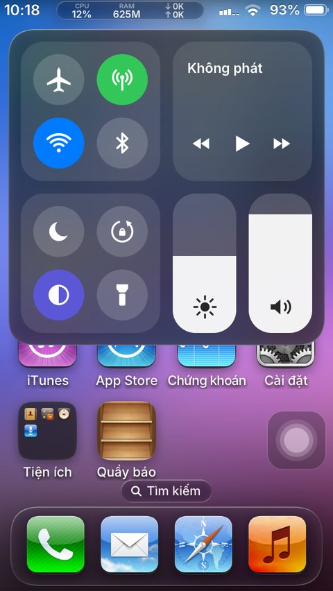

Glass 6 1.0.6
Liquid Glass (iOS 26) cho iOS 6 · for iOS 6



Bản 1.0.6
Cập nhật trong máy lấy từ máy chủ repo.caominh.net trước, máy chủ cũ làm dự phòng
Nguồn Cydia mới: https://repo.caominh.net/ — thêm nguồn này để nhận bản mới sớm nhất
Trang giới thiệu mới: repo.caominh.net/glass6
Gói kèm tệp giấy phép của các thành phần bên thứ ba
English: in-app updates now come from repo.caominh.net first; new Cydia source https://repo.caominh.net/; new home page repo.caominh.net/glass6; third-party license notices included.
Bản 1.0.5
Cuộn mượt ở Cài đặt › Glass 6 trên iPhone 5: công tắc kiểu mới không còn bị iOS 6 vẽ lại nhiều lần mỗi khi hiện ra
Bật 4G: bước kiểm APN chỉ chạy khi bảng đứng yên và không lặp lại mỗi lần mở trang; dòng «Bật 4G», «Mạng đang dùng» không còn làm chậm lúc cuộn
English: Settings › Glass 6 now scrolls smoothly on iPhone 5 — switches are no longer re-rendered several times by iOS 6, and the 4G / APN checks no longer run while scrolling.
Bản 1.0.4
Chặn safe mode do thông báo: app gửi thông báo có nửa emoji (chữ bị cắt giữa emoji) làm màn hình chính iOS 6 sập — Glass 6 tự sửa chữ trước khi iOS dùng
Chốt chặn lỗi CoreTelephony («Bật 4G») giờ chạy cả trên máy cài ít tweak
English: prevents an iOS 6 SpringBoard crash (safe mode) caused by notifications containing half of an emoji; the CoreTelephony guard now also works on devices with few tweaks.
Bản 1.0.3
App Lịch vẽ lại kiểu iOS 26 (lịch tháng, màn Ngày) trên iPhone và iPad
Âm lịch Việt Nam: ngày âm dưới ngày dương, ngày hoàng đạo (vàng cam), mùng 1 / rằm / lễ (đỏ); ngày đang chọn có can chi, thần trực ngày, giờ hoàng đạo, tiết khí. Công tắc «Âm lịch trong app Lịch» trong Cài đặt › Glass 6
English: Calendar redrawn in the iOS 26 style (month and day views) on iPhone and iPad, with the Vietnamese lunar calendar — lunar dates, auspicious days and hours, lunar holidays. Switch: “Lunar Calendar in Calendar”.
Bản 1.0.2
Hỗ trợ thêm iPad 4 (iPad3,4 / 3,5 / 3,6, iOS 6): cùng giao diện kiểu iPadOS 26 như iPad mini 1, vẽ nét theo màn Retina
English: adds iPad 4 (iOS 6) — the same iPadOS 26 look as on iPad mini 1, drawn sharp for the Retina screen.
Bản 1.0.1
Bật 4G trên iPhone 5 (Cài đặt › Glass 6 › Mạng di động): LTE cho SIM MobiFone, Viettel, VinaPhone bằng phần LTE có sẵn trong iOS 6; APN, MMS giữ như trước; tắt là về đúng 3G gốc
Tin nhắn: sửa màu dải ngày giờ, nhãn «Tin nhắn Văn bản», nút Gọi / Thêm vào Danh bạ, hàng «Đến:», nút Xóa / Chuyển tiếp — đúng ở cả sáng lẫn tối
iPhone: chặn một kiểu SpringBoard tự khởi động lại (vào safe mode) khi cấu hình mạng di động thay đổi
English: “Enable 4G” for MobiFone, Viettel and VinaPhone SIMs on iPhone 5; Messages colour fixes in light and dark mode; a SpringBoard crash fix on iPhone.
Bản 1.0.0
Bản đầu tiên: giao diện Liquid Glass kiểu iOS 26 cho iPhone 5 và iPad mini 1 (iOS 6)
Màn hình chính, màn khoá: dock, thư mục, ô tìm kiếm bằng kính; bốn kiểu biểu tượng; đồng hồ lớn, thông báo dạng thẻ
Control Center (iOS 6 chưa có), Trung tâm thông báo, băng thông báo, hộp thoại, bảng chọn, bảng âm lượng bằng kính
Khay đa nhiệm dạng thẻ trên iPhone; nút AssistiveTouch riêng; dải hiệu suất CPU / RAM / mạng
Trong app: thanh, bảng, công tắc, bàn phím kiểu mới; vẽ lại Cài đặt, Đồng hồ, Ghi chú, Lời nhắc, Lịch, Danh bạ, Ảnh, Tin nhắn, Điện thoại, Máy tính, La bàn, Ghi âm
Chế độ sáng / tối, tự đổi theo giờ; tắt bớt dịch vụ nền của iOS 6; chặn cập nhật iOS
Tự cập nhật trong Cài đặt › Glass 6 — chỉ cài gói có chữ ký số đúng
English
The Liquid Glass look of iOS 26 for iPhone 5, iPad mini 1 and iPad 4 on iOS 6: glass dock, folders, lock screen, notifications, alerts, a real Control Center, a card app switcher on iPhone, restyled bars / tables / keyboard inside Apple's apps, light / dark mode.
Every part has its own switch in Settings › Glass 6 (English and Vietnamese). Updates over the air, installed only when the package's digital signature is valid.
Lưu ý · Notes
Cài xong bấm Restart SpringBoard. Tuỳ chỉnh ở Cài đặt › Glass 6.
Lần làm mới đầu tiên Cydia có thể báo NO_PUBKEY: bình thường — khoá của nguồn nằm trong gói, cài Glass 6 xong là hết. · A first-refresh “NO_PUBKEY” warning is expected; the key ships with the package.
Chỉ chạy trên iPhone 5, iPad mini 1 và iPad 4, iOS 6.0 – 6.1.x; máy khác không bị thay đổi gì. · Runs only on iPhone 5, iPad mini 1 and iPad 4 (iOS 6.0 – 6.1.x); other models are left unchanged.
Không sửa tệp hệ thống — gỡ gói là sạch (trừ «Bật 4G» trên iPhone 5: tắt công tắc hoặc gỡ gói là trả lại nguyên). Màn hình chính khởi động 3 lần liền mà chưa ổn thì Glass 6 tự tắt.